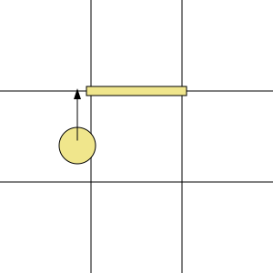

Unlike sector-based one, this uses more complex logic, but simpler maps
Given that walls can be placed only on sides of a square grid, let's have a look at sample collision situation:

To make calculations simpler, let's mark areas where center of character is allowed to be located. Also, let's make these areas orthogonal. So we see that due to non-zero character size, around each wall there is an area of "forbidden coordinates", where center of character is forbidden to be located. Adding wall width to that, let's reserve about ¼ of cell size around each wall. Looking at areas where walls might be, we can separates whole map into regions like this:
Here we mark three different types of regions:
-
a - where there are no walls around, so no problems walking;
-
b - where there might be a single wall - either "vertical" or "horizontal";
-
c - affected by several possible walls - it's the most complex case.
First, how do you easily find out what region you're in? That's pretty easy, just look at this picture:
Given that walls can lay only on grid with integer numbers, it's enough just to multiply coordinates by 2, and round result to nearest integer:
-
if this value is even - then we're on a wall;
-
if both x and y are odd - we're in "a" region;
-
if one of them is odd, and another is even - we're in "b" region;
-
if both of them are even - we're in "c" region.
So given that a character wants to move from coordinates (x0,y0) to (x1,y1) coordinates, we first find out type of region for (x1,y1) coordinates according to the simple maths in above paragraph, and then:
-
if it's region "a" - character can move there;
-
if it's region "b" - if there is a wall there, character can move only along it;
-
if it's region "c" - this needs more careful processing, see below.
For region "c", if there is any of 4 adjacent walls, we need to check where the character was before (coordinates (x0,y0)):
-
if in region "b" (obviously, there was no wall there) - character can move only in the direction opposite to that wall direction (if character moves from left, as on the picture, he is allowed to move only up or down);
-
if in region "a", then it's a corner case, read further.
When moving from region "a" to "c", then we need to check two nearest walls -
-
if any of them exist, we're forbidden to move in that direction;
-
If, however, none of these walls is there - it means that some other of walls exist. In this case we need to forbid moving in one of directions, and it doesn't really matter which, so you can chose them randomly :)
Sample code:
function pmove(old_x, old_y, new_x, new_y, walls_h, walls_v){
var new_x_2x=Math.round(new_x*2);
var new_y_2x=Math.round(new_y*2);
var on_v_wall=(new_x_2x % 2 == 0);
var on_h_wall=(new_y_2x % 2 == 0);
if(on_h_wall && on_v_wall){
// we're moving into area "c" - hard case
if(walls_h[new_y_2x/2][(new_x_2x)/2] || walls_h[new_y_2x/2][(new_x_2x)/2-1] ||
walls_v[(new_y_2x)/2][new_x_2x/2] || walls_v[(new_y_2x)/2-1][new_x_2x/2]){
// and one of walls is here
var old_x_2x=Math.round(old_x*2);
var old_y_2x=Math.round(old_y*2);
if(old_y_2x % 2 == 0){
// we're moving from "b" area, horizontally
// hence, block horizontal movement - only vertical allowed
new_x=old_x;
} else if(old_x_2x % 2 == 0){
// same, but opposite
new_y=old_y;
} else {
// we're moving from "a" area - corner case
// new_x=old_x;
// new_y=old_y;
var changed=false;
if((walls_h[new_y_2x/2][(new_x_2x)/2] && old_x_2x>new_x_2x) ||
(walls_h[new_y_2x/2][(new_x_2x)/2-1] && old_x_2x<new_x_2x)) {
// nearest horizontal wall is here
// forbid vertical movement
new_y=old_y;
changed=true;
}
if((walls_v[(new_y_2x)/2][new_x_2x/2] && old_y_2x>new_y_2x) ||
(walls_v[(new_y_2x)/2-1][new_x_2x/2] && old_y_2x<new_y_2x)){
// same, but opposite
new_x=old_x;
changed=true;
}
if(!changed){
// we must change something to prevent walking into the wall
if(Math.random()<0.5){
new_x=old_x;
} else {
new_y=old_y;
}
}
}
}
} else if(on_h_wall){
// we're moving into area "b"
if(walls_h[new_y_2x/2][(new_x_2x-1)/2]){
// there's a horizontal wall ahead
// forbid horizontal movement
new_y=old_y;
}
} else if(on_v_wall){
if(walls_v[(new_y_2x-1)/2][new_x_2x/2]){
// same, but opposite
new_x=old_x;
}
}
return [new_x, new_y];
}
Illustrations drawn using drawsvg.